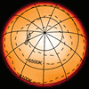
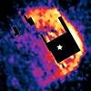
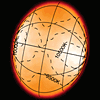

Звезды не как точки
по возрастанию размера
по возрастанию массы
50
887
11.6
M1–M2 Ia–ab
3590
0.0–1.61
−3.00
37–41
680–800
12.65
M1.5 Iab–Ib
3660
0.6–1.6
–2.73
57±5
370±50
1.2
M8IIIe
2740±190
0.6–1.6
−2.65
44±4
229–560
1
M7.5IIIe
2500–3129
7–11.6
–1.7
43±2
367
1.18
M7 IIIe
2918–3192
2.0–10.1
–0.73
18.4
350
1.5
S5,7: (~M5)
3100
5.31–7.01
–0.62
355 ± 55
1.3 ± 0.7
C6,5ea(Np)
2,640 ± 80
5.72–7.41
1.44
Оболочка, окружающая звезду, имеет сложную спиралеобразную структуру.
100
2.7
M6e–M9e
2800
7.4–14.3
1.31
3.2
2.36×2.82
2.135
A0 V
10000
−0.02…+0.07
–0.177
Первая звезда после Солнца, для которой был получен спектр.
Это произошло в августе 1872 г.
3
1.63–2.03
1.79
A7 V
6900–8500
0.76
0.35

3.43–3.69
1.91
F2 III
7079
2.25–2.31
1.63
2.3
1.74
A8Vn
7740±170
2.51
2.15

460–631
2
M6e/M9e:
2128–2830
3.5–10.9
–1.16
143–358 + 3.9
2.2–15 + 6–14
F0 Iab + ~B5V
7750 + 15000
2.92–3.83
1.83

3.09±0.15
3.8
B8 IVn
12460±200
1.40±0.05
1.54
2.6
2.4±0.25
A5 III + K5–7 V
7880–8050
2.07
1.74
2–2.45
7.3×11.4
6.7
B6 Vep
15000
0.40–0.46
0.80
2.502
15.9±0.8
2.6±0.4
K1III + KV
4665±140
3.92–4.14
2.19
10.1±0.4
1.28±0.07, 0.73
K1 III + dG/K
4571±5
4.13–4.29
2.35
10
587–593
14.37±2
M2Iab–Ib
3801–3820
4.23–4.54
0.31
770±30
12-15
M4Iab
3470±90
7.82–9.0
3.05
510±20
9-12
M2Iab
3750±60
8.34–9.70
3.89
2.7±0.2, 3.5±0.3
3.17±0.2, 0.7±0.1
B8V + K0IV
13000, 4500
2.1–3.35
2.16
6, 15.2±0.2
13.2±0.3, 3±0.2
B8.5Ib–II
30000, 13300
3.25–4.36
3.35
5.6, 1.6±0.2
1.3, 1.14±0.06
K0IV+G5V
4560, 5670±100
6.35–6.71
4.46
2
em, P Cyg
4.3–17.6
Новая открыта 14.08.2013. Впервые в спектре новой обнаружены признаки производства лития.
1260–1650
19.2 ± 0.1
M2e Ia
3750
3.43–5.1
-0.52
2.29±0.06
2.8±0.1
B9 IVn
11361±66
4.139
4.29
241.0±35
0.87±0.4
M6/7pe
2800
3.9–10.5
0.09
1420±120
17±8
M3–M4.5
3490±90
6.5–9.6
1.98
Этот список звезд содержит:
Статистика звездных каталогов (файл создается автоматически),
звездные каталоги в картинках .
А также:Близкие звезды
Замечания:
Бетельгейзе
– первая звезда, угловой диаметр которой измерен методом интерферометрии. Измерения были проведены 13 декабря 1920 года.Эта Киля .
Дополнительные источники:
Angular diameter Список утвержденных МАС имен звезд , 336 имен. Дополнительно, 112 имен, данных в рамках компании NameExoWorlds .Historical brightest stars Hypergiant ,
Eddington luminosity . Observations of massive stars show a clear upper limit to their luminosity, termed the Humphreys–Davidson limit after the researchers who first wrote about it.Hayashi limit is a constraint upon the maximum radius of a star for a given massList of most massive stars ,
List of largest stars ,
List of most luminous stars .
Hypernova ,
SN 2005ap ,
SN 2015L ,
PS1-10adi .Open Astronomy Catalogs :
the Open Supernova Catalog ,
the open kilonova catalog ,
The Open TDE Catalog
(Tidal disruption event ).The orbit of Theta1 Orionis C ,
GRAVITY discovers new double star in Orion Trapezium cluster NASA Exoplanet Archive (4116 confirmed planets),
The Extrasolar Planets Encyclopaedia (4177 planets / 3098 planetary systems / 679 multiple planet systems),
Exoplanet Orbit Database | Exoplanet Data Explorer (3262 confirmed planets).
List of directly imaged exoplanets White Dwarfs within 25 Light Years,
List of white dwarfs .Tolman–Oppenheimer–Volkoff limit , List of most massive neutron stars, List of least massive black holes,
Stellar black hole ,
Quark star .Radio-quiet neutron star ,
Великолепная семёрка нейтронных звезд,
Калвера (нейтронная звезда) .
List of gamma-ray bursts ,
GRB 080916C ,
GRB 080319B List of open clusters .List of gravitational wave observations Что и как открывать на небе , Список ссылок Д. Денисенко Number Densities of Stars of Different Types in the Solar Vicinity Eric MamajekInterstellar medium
2019–2020 Википедия. Компиляция, код: Д.С. Насонов.